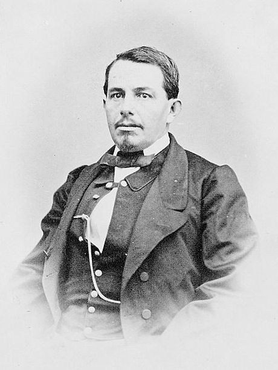
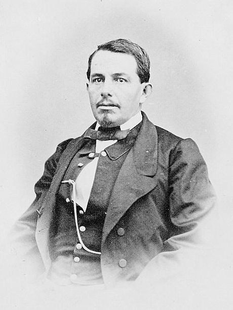

PERSONAJES PRICIPALES DE LA BATALLA
BENITO JUÁREZ
Las graves dificultades económicas por las que pasaba el país de México obligaron a Juárez a suspender el pago de l a deuda externa. Asumió al país en una tensa situación de guerra. Las promesas de Juárez determinaron la retirada de las dos primeras potencias.
a deuda externa. Asumió al país en una tensa situación de guerra. Las promesas de Juárez determinaron la retirada de las dos primeras potencias.
Benito Juárez se retiró a Paso del Norte y desde allí organizó la resistencia. Hombre de leyes por encima de todo, prorrogó no sin profunda vergüenza y violencia interna sus poderes presidenciales hasta que terminase la guerra, y emprendió enseguida la ofensiva republicana, que triunfaría tras el sitio de Querétaro en 1867 y se saldaría con el fusilamiento de Maximiliano el 19 de junio en el Cerro de Campanas.
GENERAL IGNACIO ZARAGOZA
 El militar liberal nació en Bahía del Espíritu Santo, Texas (entonces provincia mexicana), el 24 de marzo de 1829 (se dice también 1828). Fue ministro de Guerra en 1861. El 5 de mayo era general en jefe del ejército de Oriente. Después de derrotar a las fuerzas francesas en esa batalla, Ignacio Zaragoza visitó brevemente la ciudad de México, donde fue aclamado por el público y el gobierno de Benito Juárez.
El militar liberal nació en Bahía del Espíritu Santo, Texas (entonces provincia mexicana), el 24 de marzo de 1829 (se dice también 1828). Fue ministro de Guerra en 1861. El 5 de mayo era general en jefe del ejército de Oriente. Después de derrotar a las fuerzas francesas en esa batalla, Ignacio Zaragoza visitó brevemente la ciudad de México, donde fue aclamado por el público y el gobierno de Benito Juárez.
El 22 de mayo fue a visitar a las fuerzas que estaban en las Cumbres de Aculzingo, y ahí enfermó de fiebre tifoidea. Murió el 8 de septiembre en Puebla, a los 33 años de edad, y fue enterrado el día 13, con gran solemnidad, en el Panteón de San Fernando de la ciudad de México. El presidente Benito Juárez lo declaró Benemérito de la Patria en grado heróico, y dio a la ciudad de Puebla el nombre de “Puebla de Zaragoza”. En 1976 sus restos fueron trasladados a un monumento erigido en su memoria en la ciudad de Puebla.
GENERAL MIGUEL NEGRETE NOVOA

Fue un militar mexicano que participó durante las guerras civiles del siglo XIX, así como durante las intervenciones de Estados Unidos y Francia. Fue Ministro de Guerra durante la presidencia de Benito Juárez.
Falleció el 1o. de enero de 1897 en la Ciudad de México y sus restos fueron trasladados a la Rotonda de las Personas ilustres el 5 de mayo de 1948.
PORFIRIO DÍAZ MILITAR Y POLÍTICO
Formó parte de las filas del ejército mexicano. En la Invasión Francesa (1861-1867), contribuyendo a que el entonces presidente Benito Juárez obtuviera la victoria con una actuación destacada.
“Las fuerzas del general Porfirio Díaz y las caballerías del coronel Antonio Álvarez rechazaron a los franceses hasta la hacienda de San José, obligándolos a aceptar su derrota y retirarse rumbo a Orizaba”.
SEXTO BATALLÓN DE GUARDIA
Miguel Negrete se había percatado de la valentía y disciplina de los milicianos del 6º Batallón y al parecer durante dicha batalla había utilizado a éste exitosamente como señuelo para atraer a la vanguardia de la columna francesa que ascendía hacia las cumbres hacia una emboscada razón por la cual, luego de que el 2 de mayo llegara a la Cd. de Puebla el Ejército Mexicano de Oriente, el día 3 el Gral. Zaragoza ordena que el 6º Batallón sea relevado de toda faena de plaza y que quede sujeto solamente a las órdenes directas del Gral. Miguel Negrete.
JOSÉ ROJO
El coronel mexicano José Rojo avisó a Antonio Álvarez que era tiempo de que la caballería mexicana entrara en acción para alcanzar una victoria completa. Ordenó a los Carabineros de Pachuca cargar sobre los restos de la columna, disparando sus carabinas y lanzando mandobles de sable sobre los franceses, siendo totalmente rechazados.
El militar liberal nació en Bahía del Espíritu Santo, Texas (entonces provincia mexicana), el 24 de marzo de 1829 (se dice también 1828). Fue ministro de Guerra en 1861. El 5 de mayo era general en jefe del ejército de Oriente. Después de derrotar a las fuerzas francesas en esa batalla, Ignacio Zaragoza visitó brevemente la ciudad de México, donde fue aclamado por el público y el gobierno de Benito Juárez. El 22 de mayo fue a visitar a las fuerzas que estaban en las Cumbres de Aculzingo, y ahí enfermó de fiebre tifoidea. Murió el 8 de septiembre en Puebla, a los 33 años de edad, y fue enterrado el día 13, con gran solemnidad, en el Panteón de San Fernando de la ciudad de México. El presidente Benito Juárez lo declaró Benemérito de la Patria en grado heróico, y dio a la ciudad de Puebla el nombre de “Puebla de Zaragoza”. En 1976 sus restos fueron trasladados a un monumento erigido en su memoria en la ciudad de Puebla.
GENERAL MIGUEL NEGRETE NOVOA

Fue un militar mexicano que participó durante las guerras civiles del siglo XIX, así como durante las intervenciones de Estados Unidos y Francia. Fue Ministro de Guerra durante la presidencia de Benito Juárez.
Falleció el 1o. de enero de 1897 en la Ciudad de México y sus restos fueron trasladados a la Rotonda de las Personas ilustres el 5 de mayo de 1948.
PORFIRIO DÍAZ MILITAR Y POLÍTICO
Formó parte de las filas del ejército mexicano. En la Invasión Francesa (1861-1867), contribuyendo a que el entonces presidente Benito Juárez obtuviera la victoria con una actuación destacada.
“Las fuerzas del general Porfirio Díaz y las caballerías del coronel Antonio Álvarez rechazaron a los franceses hasta la hacienda de San José, obligándolos a aceptar su derrota y retirarse rumbo a Orizaba”.
SEXTO BATALLÓN DE GUARDIA
Miguel Negrete se había percatado de la valentía y disciplina de los milicianos del 6º Batallón y al parecer durante dicha batalla había utilizado a éste exitosamente como señuelo para atraer a la vanguardia de la columna francesa que ascendía hacia las cumbres hacia una emboscada razón por la cual, luego de que el 2 de mayo llegara a la Cd. de Puebla el Ejército Mexicano de Oriente, el día 3 el Gral. Zaragoza ordena que el 6º Batallón sea relevado de toda faena de plaza y que quede sujeto solamente a las órdenes directas del Gral. Miguel Negrete.
JOSÉ ROJO
El coronel mexicano José Rojo avisó a Antonio Álvarez que era tiempo de que la caballería mexicana entrara en acción para alcanzar una victoria completa. Ordenó a los Carabineros de Pachuca cargar sobre los restos de la columna, disparando sus carabinas y lanzando mandobles de sable sobre los franceses, siendo totalmente rechazados.